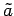
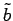
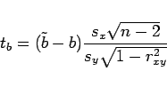
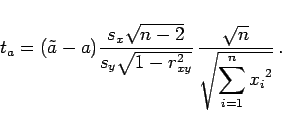
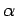
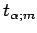
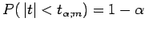
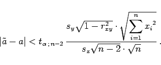

Inhalt Index DeskTop Bronstein

 Wahrscheinlichkeitsrechnung und Mathematische Statistik Mathematische Statistik Korrelation und Regression Lineare Regression bei zwei meßbaren Merkmalen
Wahrscheinlichkeitsrechnung und Mathematische Statistik Mathematische Statistik Korrelation und Regression Lineare Regression bei zwei meßbaren Merkmalen


Nach der Bestimmung der Regressionskoeffizienten  und  erhebt sich die Frage, wie gut diese Schätzwerte die theoretischen Parameter a und b wiedergeben. Dazu bildet man die Testgrößen
|  | (16.160a) |
mit
|  | (16.160b) |
Diese stellen die Realisierung von Zufallsgrößen dar, die einer t-Verteilung mit m=n-2 Freiheitsgraden genügen. Demzufolge kann man zu einer vorgegebenen Irrtumswahrscheinlichkeit  das Quantil  aus der Tabelle STUDENT-Verteilung ablesen, und aus  folgt für t=ta bzw. t=tb:
|  | (16.161b) |
Mit Hilfe der durch (16.162a,b) beschriebenen sogenannten Konfidenzintervalle für a und b kann man auch einen Konfidenzbereich für die unbekannte Regressionsgerade y = a + bx angeben (s. Lit. 16.4, 16.26).